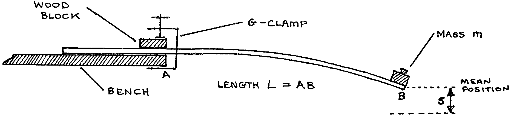
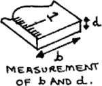
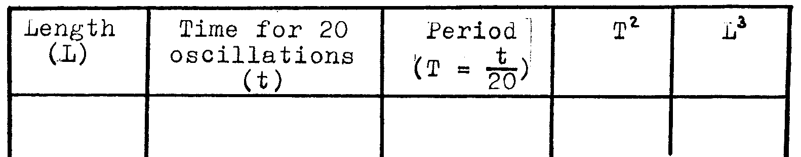

C3-1: Determining the Young’s Modulus of Wood Along the Grain Using a Cantilever¶
Apparatus¶
Wooden metre rule; 100g mass; elastic band; G-clamp; block of wood; vernier calipers; stopwatch; graph paper

Procedure¶
- Clamp the loaded metre rule firmly to the end of a bench with a definite length, \(L\), projecting from the edge of the bench.
- Start the metre rule vibrating vertically and find the periodic time, \(T\), for one complete oscillation. Do this by timing 20 oscillations and dividing by 20. Find \(T\) for the following lengths – \(L\): 0.5, 0.6, 0.7, 0.75, 0.8, and 0.9m. Tabulate your readings of \(L\) and \(T\).
- Using the callipers, measure the dimensions \(b\) and \(d\) of the metre rule. Take six readings for each dimension at different positions along the rule. Record the readings, then calculate the mean values of \(b\) and \(d\).

Observations¶
\(M =\) mass at end of the metre rule = ____ kg
6 readings for \(b\): ____, ____, ____, ____, ____, ____ Avg.: ____ m
6 readings for \(d\): ____, ____, ____, ____, ____, ____ Avg.: ____ m
Tabulate:

Theory¶
Bending theory gives \(s = \frac{4 F L^3}{b d^3 E}\) where \(F\) is a force applied to the end of the metre rule and \(E\) is known as the Young’s modulus(reference Scholarship Physics by Nelkon, fifth edition, p44). Thus if the rule is depressed a distance, \(s\), from equilibrium the restoring force is:
This force acts on the mass at the end of the rule. Ignoring the mass of the metre rule itself, the following is derived:
The solution to this equation comes from the theory of simple harmonic motion. The equation describes an oscillation with \(\omega ^2 = \frac{k}{M}\). In terms of the period this is:
Analysis¶
- Plot a graph of \(T^2\) against \(L^3\) and find the gradient.
- From the equation \(T^2 =\frac{16 \pi ^2 M}{b d^3 E}L^3\) and the gradient of your graph determine \(E\), the Young’s modulus of the wood along the grain.
- The Young’s modulus across the grain is about 0.5GPa. Compare this with your value of \(E\) from (2.) and give a reason for the difference.
- Calculate the longitudinal tension that would stretch the metre rule by 0.1mm. Use the dimensions of the rule, your calculated value for \(E\), and the relation: \(E = \frac{\text{stress}}{\text{strain}}\)